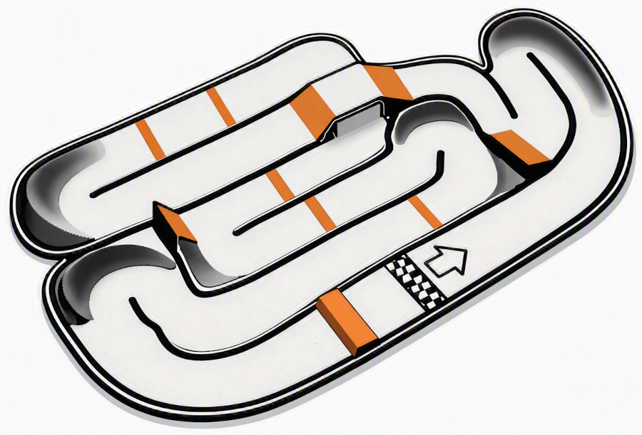

La piste est en terre, spécialement aménagée pour le modélisme tout‑terrain. Elle comporte des bosses, des virages relevés et plusieurs zones de saut permettant aux pilotes de tester la stabilité et la précision de leurs modèles.
Occupant une surface totale de 40 m sur 18,5 m, soit environ 660 m², le circuit offre un espace idéal pour les sessions d’entraînement, les roulages libres et les rencontres entre passionnés. Un pont inférieur ajoute une dimension technique supplémentaire, rendant le parcours à la fois ludique et exigeant.
